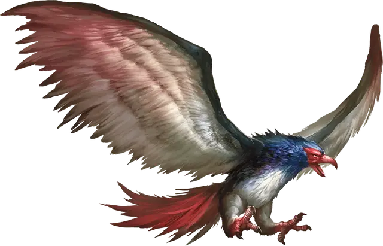

Рух
Roc
Громадный Монстр, без мировоззрения

Класс Доспеха 15 (природный доспех)
Хиты 248 (16к20 + 80)
Скорость 20 футов, летая 120 футов
| мод | спас | ||
|---|---|---|---|
| СИЛ | 28 | +9 | +9 |
| ЛОВ | 10 | +0 | +4 |
| ТЕЛ | 20 | +5 | +9 |
| мод | спас | ||
|---|---|---|---|
| ИНТ | 3 | −4 | −4 |
| МДР | 10 | +0 | +4 |
| ХАР | 9 | −1 | +3 |
Навыки Восприятие +4
Чувства пассивное Восприятие 14
Опасность 11 (7200 опыта)
Бонус мастерства +4
Среда обитания Арктика, Горы, Побережье, Пустыня, Холмы
Особенности
Острое зрение. Рух совершает с преимуществом проверки Мудрости (Восприятие), полагающиеся на зрение.
Действия
Мультиатака. Рух совершает две атаки: одну клювом, и одну когтями.
Клюв. Рукопашная атака оружием: +13 к попаданию, досягаемость 10 футов, одна цель. Попадание: Колющий урон 27 (4к8 + 9).
Когти. Рукопашная атака оружием: +13 к попаданию, досягаемость 5 футов, одна цель. Попадание: Рубящий урон 23 (4к6 + 9), и цель становится схваченной (Сл высвобождения 19). Пока цель схвачена, она опутана, и рух не может использовать когти против другой цели.
Описание
На первый взгляд, силуэт рух похож на силуэт любой другой хищной птицы. Однако когда она приземляется, её ужасающий размер становится понятен. В полёте размах крыльев рух может достигать более двух сотен футов. Сидя в покое на вершине скалы, где гнездятся эти птицы, они могут посоревноваться в размере со старейшими драконами.
Небесные титаны. В древние времена, когда великаны сражались с драконами за контроль над миром, Аннам, отец богов великанов, создал этих птиц, чтобы его почитатели могли бросить вызов господству драконов в воздухе. Когда война кончилась, рух были освобождены от служенья великанам, и распространились по всему миру.
Хоть облачные и штормовые великаны иногда и укрощают этих птиц, рух даже великанов считают потенциальной добычей. Они пролетают огромные расстояния в поисках еды, паря высоко над облаками, чтобы достичь своих любимых охотничьих угодий. Рух редко охотятся на быстрых и маленьких существ, а также игнорируют города и леса, где добыча может легко укрыться. Выследив большую, медленно движущуюся цель, такую как великан, кит или слон, рух пикирует вниз, хватая жертву длинными когтями.
Изолированные и одинокие. Рух — одиночные существа, которые могут жить несколько веков. Они строят свои гнезда из деревьев, палаток, разбитых кораблей и остатков караванов, которые они уносят и размещают в горных ущельях, недоступных для мелких существ.
Иногда гнезда рух содержат в себе сокровища караванов или кораблей, несших их, но рух не обращают внимания на эти безделушки. Еще реже в гнездах можно найти яйца с человеческий рост и больше, появившиеся в результате нечастых спариваний рух.